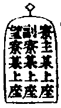

禪林備用卷之六
龍 請立僧首座
大方西堂。名德首座。人天師範。言行相應。一眾投情。方可舉請。其事嚴重。委曲控陳。如蒙允許。集眾陞堂。此間多眾。須得當人。相與建立法幢。開大爐鞴。以慰眾望。山中幸有某人。知見高明。慧命所寄。下座。兩班大眾。同伸拜請。為眾開室。伏望慈悲。特垂開允。下座。方丈客頭陳設香几。住持插香。同眾攀請。詞云。(大眾傾心。久思示誨。伏望慈悲。特賜開允)畣云。(既蒙堅請。不敢固辭)普同觸禮一拜。請已。客頭行者。呈納普說入室二牌。先用拌袱盛之。受已。堂司行者收牌。乃上方丈炷香。觸禮致謝。住持免禮。謝詞云。(某甲幸獲依棲。貴圖藏拙。既蒙見舉。不敢有違)畣云。(象駕既臨。法輪常轉。不合奉煩。冀以法道為。重。為眾開示)平交立僧詞云。(方圖侍誨。豈復為人。尊命下臨。寸心多愧)畣云。(佛法寄重。仰丐埀情)法眷參學詞云。(此蒙旨揮。令受兄弟問訊。雖無深證。不敢固辭。下情無任愧悚)答云。(既有餘光。望以佛法為謝)謝已。堂司行者。鳴僧堂前鐘。大眾同送歸寮。住持對觸禮一拜。送出。次與大眾人事。更若名德之士。受此請。住持座上說及。即抽身歸寮閉門。下座。領大眾扣門。開門接。住持入。插香。同眾觸禮一拜。呈納普說入室牌。次與大眾人事了。維那詣寮。議請侍者一人。有處祇和會聖僧侍者燒香。非法。昔破庵和尚在徑山為立僧。無準和尚為侍者。後世其家。蓋有由也。
挂牌普說。鋪設照堂。禪椅拂子。爐燭。鳴齋皷一通。眾集立定。立僧歸位。維那出班問訊。燒香一片。眾同觸禮一拜。當約免。趺坐。普說竟。維那同眾。觸禮一拜。申謝。立僧即詣方丈。插香展具。住持當免。隨觸禮一拜。畣前拜也。參學法眷謝。當兩展三拜。詞云。(既蒙使令。勉顏承領。慈悲包荒。不勝愧悚)次堂司行者。引至庫司。諸寮人事。
方丈俻草飯。請特為湯藥石。至晚湯果。兩班光伴。立僧侍者同席。次早方丈請僧堂特為茶。請客侍者具茶榜。詣寮插香拜請。與特為新首座茶同。立僧當特為下手人茶。與特為新後堂茶同。別日方丈管待。兩班光伴。
此職請受兩難。皆當任重。昔徑山蒙庵之請破庵。靈隱松源之請掩室。遞相激揚。令法久住。破庵室中舉話寶上座無啟口處。遂即坐脫立亡。遺囑頂骨舍利呈首座。可謂了事丈夫。殊不知。破庵機路圓活。卒難湊泊。人所宗仰。
師 請名德首座
住侍須預稟露。如有允意。先方丈請茶。兩班光伴。即鳴皷陞座。更不挂牌報眾。住持委曲以佛法為念。慇懃致懇。下座同大眾。觸禮一拜。陳請。鳴鐘送歸鉢位。送歸寮。並有觸禮一拜。次兩班大眾作賀。茶湯管待。禮與前同。進退不混。兩班無交代也。
火 兩班進退
或解制。或年夜。為期。隨處常式。頭首人材。當於夏中。審知所學。量才補職。知事戶門事務。莊庫歲計。並須審細。至職滿日。預上方丈稟退。擇人既定。欲來日進退。侍者密報兩班。昏鐘鳴。知事一班。詣方丈插香。普同觸禮一拜。而退。就中或再留者。挑燈住持送歸庫司。侍者燒香點湯。五更鐘鳴。頭首一班。上方丈插香。觸拜而退。或再留者。先一日晚。住持詣寮。侍者燒香點湯。勉留。請選頭首。從眾名勝。老成採議。萬不失一也。知事則訪問公心耆舊。上手知事。住持須著面和會。已次諸職則委心腹左右人和會。逐一預定。方行舉請。切見古人。於東序一職。最涉重荷。為住持者。近來多徇私情。不擇可否。請歸庫司。靡不為也。尅削常住。豐己篾公。凡供眾修造。山門係重之事。略不關懷。誠可痛也。觀此當集大眾。協心公議。名實相當者。眾請龍神作證。大小執職。一例公同。鬮拈。庶絕私意。叢林不致廢弛。為住持者。審諸。
前堂首座。住持躬詣寮中。侍者燒香點茶。盡禮敦請。乃叢林表率故也。已次頭首。亦預存恤。
至日進退。侍者密覆住持。具請人目子具名。令客頭行者請茶。候僧堂粥再請。分差行者守請喫茶。人到寢堂請西堂大耆舊光伴。勸請。舊知事一班。候粥遍。從後門入。上首白槌一下云。(白大眾。某等是蒙堂頭和尚慈旨。令歸庫司。一年已滿。心力疲倦。告退歸堂。謹白)再鳴槌一下。從龕後左。出住持前。兩展三禮。初展云。(某等昨蒙甄錄。自愧非材。下情無任愧悚之至)二展寒溫。觸禮三拜。退身。龕後右。出聖僧前。大展三拜。轉身住持前問訊。面北巡堂一帀。中間問訊而退。
粥罷不諷經。一一守請至寢堂。住持接已獻茶畢。躬起燒香一炷。歸位序請意。侍(某拜白大眾。前兩班告退。不可缺人。拜請某人。充某頭首。〔侍者呈目子。住持白請訖。至爐前。侍者揖請。新〕)頭首。一一至爐前受請。如未允請。眾耆舊力當勸勉已。住持先觸禮。頭首隨對觸一拜了。白請知事一班訖。頭首一班。進前行禮。初展云。(某等自慚匪器。過蒙甄錄。下情不勝愧悚)二展寒溫。觸禮三拜。住持各畣一拜。住持復位。分座喫湯。新東西班。住持對面。耆舊上下間列坐。侍者燒香下湯。
供頭斂僧堂前鐘。大眾入堂內立。新知事一班。歸西堂對板排立。住持送前堂歸鉢位。對觸禮一拜。次頭首隨對觸禮一拜。次送後堂歸鉢位。對觸禮一拜。如缺前堂。別日上堂。說及。後板方轉前板。插單唱食。
住持歸位立定。如維那知客退已。侍者往住持前。問訊側立。住持付目子與之。當面問訊。從龕後轉槌邊。白槌一下云。(前知事告退。此務不可缺人。適奉堂頭和尚慈旨。令某人充某職。謹白)復鳴槌一下。客頭即揖請。新受職人。一班至住持前。觸禮一拜。受職侍者。白云。(請知事訖)又鳴槌一下。知事一班行禮。初展。二展(詞語寒溫。並首座同)普同觸禮三拜。住持畣一拜。知事轉龕後右出聖僧前排立。大展三拜。侍者引至住持前問訊。面北巡堂一帀。歸中問訊。橫退三兩步。西堂板頭立。堂司行者喝云。(新知事。與大眾人事)普同觸禮三拜。又喝云(大眾禮賀新知事)普觸禮三拜。又喝云。(新知事禮謝大眾)普同觸禮三拜。喝云。(大眾送新知事歸庫司)供頭鳴僧堂前鐘。送新知事。前堂并維那。舊前堂都寺。乃止鐘。知事一班。庫司門外右立。住持送入。對觸禮一拜。送住持出。次與舊人交代。舊居左。觸禮一拜。新轉左。觸禮一拜。各敘寒溫作賀。首座領大眾至。即接入問訊致賀。送出。喝云(大眾送新首座歸寮)右接住持入。對觸禮一拜。送出。次交代。互相賓主對觸禮一拜。送出。次頭首領眾致賀。喝云(首座大眾送新維那歸寮)住持送入。對觸禮一拜。送出。交代作賀同前。又喝云。(請首座大眾。送舊首座都寺歸單寮)又喝云。(請兩班耆舊。送後堂書記藏主知客歸寮)逐一白送訖。喝云。(送舊頭首知事。歸蒙堂前資寮。住持送入。普對觸禮一拜。送住持出。居主位接侍者作賀。送出。接兩班大眾作賀。送出。居右位與寮)主人事。
新舊兩班。即詣方丈拜請新舊都寺首座。各插香。係庫司備送。(新舊兩序同巡寮。半齋點心。齋時草飯並就方丈。西堂耆舊光伴。莊庫職務不)在覆替。先審詳已。就便請人。寮元延壽堂主淨頭爐頭炭頭水頭。列項雜職。待請兩班了。別日詣堂司告退。擇道心人。次第交替。方丈問訊。庫司人事。隨例點心管待。
帝 挂鉢請知事
大慧簡堂道德崇重。凡請知事。先不和會。粥罷。堂司行者喝云。(請大眾小立)維那聖僧前。燒香一炷。巡堂一帀。往住持前問訊。側右立。接目子。當面問訖。龕後轉槌邊。白槌一下云。(適奉堂頭和尚慈旨。令某人充某職)逐一白請訖。客頭揖受請人。至住持前。受職。與前禮同。次會頭首耆舊茶。勸勉。請訖送禮。並同前。
鳥 侍者進退
頭首退已。侍者一班。具威儀咨稟。住持預當擇人。請兩班已。侍者一班。詣方丈插香。同大展三拜。稟退。住持批下堂司。即令行者。請受職人。到堂司喫茶。人至揖入。炷香獻茶已。再起身燒香一炷。復位立。白云。(適奉堂頭和尚慈旨。令某甲上座。充某職)逐一白請訖。受請人。進前。普觸禮一拜。轉位獻湯。維那行禮。揖坐揖香揖湯。請寮元光伴。湯罷。同上方丈接已。侍者一班列立定。燒香侍者插香。同大展三拜了。維那送侍者歸寮。觸禮一拜。送維那出。與舊人交代頭首禮同。方丈行者插香禮拜。轎番直廳參拜。
若名德之士。住持初接免行禮。躬送入寮。對觸禮一拜。維那人事而已。堂司行者。引新舊侍者巡寮。
聖僧侍者。(別日)維那入寮已。即和會。有道心兄弟充職。維那引上(方丈)禮拜。免則問訊而退。隨例湯茶。點心管待。
當日批下堂司。請舊侍者茶。送歸眾寮。維那上首對觸禮一拜。對轉觸禮一拜。送維那出門。次與寮元人事。
官 方丈特為新舊兩班湯
請客侍者。令客頭備柈袱爐燭。詣新舊前堂首座前炷香。首座還香。觸禮一拜。還拜。稟云。(堂頭和尚。請參前就寢堂特為献湯)次新舊都寺前。炷香。無拜。詞語同前。次兩班新舊。并耆舊光伴。客頭請釘挂寢堂鋪設。位頭西堂首座光伴。新頭首一班一出。新知事二出。舊頭首三出。舊知事四出。耆舊西班五出。耆舊東班六出。人多分接坐之。燒香侍者預排照牌。至時鳴皷客集。兩侍者行禮。小座湯禮同。至晚湯果。
來早僧堂請茶。新舊隨所請之。無光伴。如常式。庫司請茶。不及赴免之。方丈茶罷。同到庫司致謝。半齋點心。日次庫司點心。庫司送舊。首座都寺粥飯。五味椀楪。動用什物。客頭照例分送。三日送歸鉢位 圖位與小座第三座。六出位同。
人 堂司特為新舊侍者湯茶
草飯罷。維那令堂司行者。詣新舊侍者前。一一申請。并請聖僧侍者。參前就寮献湯。至晚堂司設位。排照牌。請寮元光伴。催客鳴寮前板。接入揖坐行禮。與庫司湯禮同。當在方丈特為之先。妨侍者行禮也。
皇 庫司特為新舊兩班湯藥石
草飯罷。令客頭備柈袱爐燭。上首知事。詣新首座寮炷香。首座還香。詞云。(今晚方丈湯罷。就庫司特為献湯。伏望降重)客頭請云(湯罷。就座藥石)次請新舊大小職事耆舊。光伴。庫司釘挂設位。排照牌。西堂光伴。無則耆舊首座。位分六出。新頭首一出。舊頭首二出。知事三出。莊庫四出。次第接排坐之。新知事主位之下不赴坐。新維那上首知事隣肩。西班東班耆舊五出六出。各依照牌立定。都寺從一出頭一字問訊。直巡遍。中央問訊。眾坐。復進前。燒香二炷。從一出頭。當面問訊。巡至位末。又當面問訊。復從二出三出四出五六出。如前問訊。巡訖。歸中問訊。燒光伴香一炷。就位坐。與眾朝揖。下湯。湯罷。起身。新舊兩班上首各一人。出詣爐前。謝湯。各抽衣。就位藥石。
始 送鉢位
兩班退職三日後。未開小靜時。堂司行者人力。挑燈請舊首座都寺。就維那寮獻湯。接入炷香下湯。白意云。(清職既圓。山門禮當延送鉢位)維那預定鉢位板頭。先送首座入鉢位。對觸禮一拜。次接都寺送鉢位。對觸禮一拜問訊。維那從前門而出。首座都寺挂鉢過堂。若名德西堂。到寺挂搭。住持請湯。同赴堂送歸鉢位。有東堂則送後堂分手板鉢位。諸方前堂都寺挂搭。讓本山一人。次第間排後堂書記。監寺藏主。排副鉢位。隨山門高下。大川和尚住淨慈。如此間排東叟石林二老祖住日。同首座上板頭。都寺下板頭。
制 管待新舊兩班
住持特為陞座。敘謝新舊兩班下座。眾進前致謝住持。庫司預覆方丈。製造食品。請客侍者。令客頭行者。備柈袱爐燭香合。詣新舊首座都寺處炷香。陳請云。(方丈和尚。午刻請就寢堂管待)當還香。次兩班新舊職事人。并耆舊光伴。並客頭請。寢堂釘挂設位。排照牌。係燒香侍者提點。未齋先催客齊集。住持接問訊。次接光伴人。各入座。依照牌立定。兩侍者行禮。巡揖坐燒香。須分出頭。揖香了下湯。分出頭揖湯。進卓。侍者一班。列住持前問訊。入位下飯。燒香侍者離位燒香一炷。下嚫重輕照常式。
食了鳴鼓。講茶禮。侍者燒香。兩侍者分出頭。揖香揖茶。與特為湯禮同。但無揖坐一巡也。茶罷。爐前致謝。住持送出。次送光伴人。
文 住持垂訪點茶
山門茶湯禮畢。住持齋罷。垂訪諸寮點茶。意在溫存。照覷寮舍不便處。什物缺典。責付庫司措辨。前堂寮知客寮。茶頭人力。例免普請。維那寮人力。結夏免普請。諸寮人力普請。不及公界。須當詳審通容。多因瑣屑。致傷和氣。客僧到來。不以時限。齋過須當打飯延接。庫廚執事。不可懱裂。茶湯五味。隨宜均送。紙筆果實之屬。衣鉢侍者。時當照拂。住持事繁。在左右賢賢可也。
字 方丈特為新首座茶
方丈管待了。次早燒香侍者覆住持。客頭備柈袱爐燭香。請客侍者寫茶榜。詣首座寮炷香。(首座還香)觸禮一拜。(還拜)稟請云。(方丈齋退。就雲堂特為點茶。伏望降 重)客頭報寮挂牌。請知事光伴。僧堂住持對面。設特為位。分手光伴位。維那與都寺隣肩。次知事與特為位分手。四板頭不安香几。差行者直特為人盞。候長板鳴。請客侍者。至聖僧前大展三拜。巡堂內外一帀請茶。齋退。客頭鳴鼓集眾。燒香侍者行禮。西班全班歸前板。侍者揖前堂。歸特為位。即揖下肩上位。送入位已。龕右出外。報住持歸堂。供頭鳴鐘七下。侍者燒香一炷。徑往特為人前問訊。右出中立。鳴鐘二下。先下特為人茶。次行大眾茶了。至首座前揖茶。右出中立。先収首座住持盞。首座直趨住持前行禮。初展云。(此日特蒙煎點。禮意過勤。下情不勝愧悚)二展寒溫。觸禮三拜。各畣一拜。首座龕右出前門。住持相送。復位執盞。侍者燒光伴香一炷。鳴鐘一下。収盞。鳴鼓三下。退座。
榜式(堂頭和尚。今辰齋退。就 雲堂點茶一中。特為 新命首座。聊表陳 賀之儀。仍請 諸知事光伴 今月 日侍司 某 請客侍者名 敬白)。
乃 新首座特為後堂大眾茶(無後堂。次頭首)
方丈茶了。次早具狀。備柈袱爐燭。首座詣後堂寮。燒香一炷。(還香)陳請云。(今辰齋退。就雲堂點茶。特為。伏望降重)呈狀。接已送出。
就令茶頭付供頭。貼僧堂前下間。封皮粘狀前。
令堂司報寮挂牌。設位鋪照牌。長板鳴。僧堂請茶。鳴皷集眾行禮。躬詣方丈請茶。並前特為茶禮同。
狀式(前堂比丘某。 右某。今辰齋退。就 雲堂點茶一中。特為 後堂首座。用伸陳 賀之儀。仍請 諸知事。同垂光訪 今 月 日 前堂比丘 某 狀)。
(可漏)(狀請 後堂首座。洎大眾 前堂比丘某謹封)。
服 交代茶
叢林盛禮也。諸方今免茶禮。特設點心一分。非法也。頭首僧堂茶了。講交代茶禮。具威儀懷香。躬往交代人前插香。觸禮一拜。陳請云。(齋罷。拜屈尊重。就寮献茶)隨令茶頭請兩班耆舊光伴。
寮內鋪設中設特為位。左右分手光伴人位。知事主席分手位。次第排坐。堂司行者。報參頭差行者直位行茶。
齋退鳴寮前板。接揖特為人。次接光伴人。入位。罣罳下手。燒香揖香。再問訊燒光伴香。入位坐下茶。茶畢。交代人詣爐前。還前請香。觸禮一拜。相謝而退。送出。次送光伴人。
次日半齋。令堂司行者請交代人點心。耆舊一人光伴。或云。前堂則可請耆舊光伴。若庫司一班交代。各請對職。無則已之。只作一日講行。請西堂大耆舊。西班頭首光伴。庫堂釘挂。面裏設特為位。左右光伴位。頭首分賓位。同序隨班位坐。首座赴妨知事也。禮與前同。西班知客。東班止於維那。
衣 入寮出寮茶
入蒙堂位者。白寮主。挂點茶牌。只請本寮。備好香茶燭。普同揖坐。起身燒香。揖香了。入位坐點茶。収盞。起爐前相謝。入眾寮者。點茶禮。與出寮茶同。但不可入位坐。
蒙堂出者。點交代茶罷。令茶頭報寮長。挂點茶牌。牌左小紙貼云。(某拜請合寮尊眾。齋退就上寮)寮長分付人力。燒湯出盞。送茶燭好香。齋退。鳴寮中小板。右立揖眾入寮。爐前問訊。寮長揖點茶人入。分手位坐定。即起燒香一炷問訊寮長。又揖坐。獻茶了。起身爐前致謝。送出門。眾寮受職人點茶。令茶頭預報寮元挂牌。燒湯出盞。送茶燭。齋退。先到眾寮門外右立。揖眾入位立定。問訊揖坐。又問訊。進前燒香上下間。復上下間及兩邊問訊。仍中央問訊。寮元引揖入。對面位坐。鳴小板二下。行茶。又鳴小板一下。収盞。寮元出爐前。致謝送出。
裳 頭首江湖茶
出寮茶已。具茶榜。令茶頭貼眾寮前下間。具威儀。詣方丈請茶。四寮挂牌。諸寮報請。報供頭燒湯出盞。庫司討茶燭。僧堂四板安香几折水。出入堂四板。外堂。炷香問訊。行茶。旦望茶同。
榜式(某寮舍湫隘。不敢坐邀。今辰齋退。就 雲堂點茶一中。伏望 眾慈。同垂降 重)(今 月 日。某職比丘 某 拜請)。
(本山辦事禪師 鄉人道舊禪師 江湖名勝禪師 合寮尊眾禪師 九行書花 素紙不拘)。
推 寮主副寮進退
寮主一旬職滿。五更鐘鳴時。詣堂司稟退云。(某昨蒙尊旨。令充寮主。一旬已滿。告退歸堂)即觸禮一拜。維那送出門。令堂司行者請副寮。粥罷。就堂司獻茶。副寮至接入。坐定。燒香喫茶如常式。維那再起身。燒香一炷。白云。(舊寮主已滿。此務不可缺人。煩充寮主。幸乞允從)即觸禮一拜。送歸眾寮。堂司行者鳴寮內小板三下。維那上間送入門。對觸禮一拜。互轉身。對觸禮一拜。寮主送維那出門。次與舊人。交互轉。對觸禮。如前。寮元相接。燒香喫茶。堂司行者請新寮主。齋罷。堂司獻茶。笑翁和尚住靈隱。新舊寮主。講交代茶。至今講行。
副寮之職。於末戒者先做。係寮元請。如常。燒香喫茶。再起身。燒香一炷。白云。(舊副寮已滿。不可缺人。煩充副寮。幸乞允從)謝茶了。即送歸副寮閤。問訊了。送寮元出門。
望寮之職。即排隣戒者。具名上牌。遞相成全。預知寮中細大事務。臨時庶得現成兄弟實迫他緣。預稟寮元。將下肩者趲上。後次當職。 
位 諸莊監収
監収之職。眾人命脉。貴在擇人。當請公心大小耆舊。無任小師鄉人。苟用非其人。不識因果。隱瞞常住。苛取佃甲。無所不至。非特歲計不足。抑且累及山門。晦堂見黃龍有不豫之色。因逆問之。龍曰。監収未得人。晦堂薦感副寺。龍曰。感暴。恐小人謀。晦堂又曰。化侍者廉謹如何。龍曰。化雖廉謹。不若秀莊主。有量而忠。靈源問晦堂曰。黃龍請一監収。何過慮如此。晦堂曰。有國有家者。未甞不本此。豈特黃龍為然。先聖多誡之。至哉斯言。諸莊成熟時至。審細和會。廉謹久歷大小耆舊。或十方兄弟定已。至日請兩班大耆舊茶。勸率寢堂一一請已。轉位獻湯了。送歸客位。兩班領眾作賀。次第巡寮。草飯。特為湯。庫司特為湯。藥石。進退兩班禮同。唯天童諸莊。古式不墜。監収無入已望望畏之。每年至再和會。加禮敦請。特為了。至下莊日。山門首釘挂。講茶湯禮。鳴樓鐘集眾。門送上轎。至今遺風在焉。
遜 頭首寮舍交割什物
庫司通置總簿一面。具寫諸寮交割什物。庫記印縫。知事僉過。呈方丈。僉諸寮各置小簿兩相對同。凡頭首交替。庫司令上下庫或客頭對號交什物。動使損者須交元物。失者決要本寮供過填陪缺典之物。遇亡僧時。打入當庫司。措辦公界眼對。即抵號上簿。或增添號。庶免漏失。每見多處進退之際。動是什物缺典。具單需索。庫司付之不釆。住持又不提點。非任賢意。為頭首者。又當相體。既居寮舍。亦須整葺。將更替時。件件點對。或者自留物件添號。并留五味之屬。便益後人。此住院之根本。後人之模範。如其掃蕩一空。貽誚有識。得不愧心者哉。方丈庫司僧堂皆各有簿。交割僧堂物件。維那時當提督。須以眾人究心。因錄及此。
禪林備用卷之六